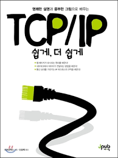

오래전에 이 책을 추천받았으나 최근에 읽어보게 되었다.
백엔드 개발자로 일하면서 프론트 엔드 개발자와 의사소통을 원활히 하기 위해서는 서로 네트워크에 대한 기본 지식이 있어야하는 것 같다.
이 글은 빠르게 목차를 리뷰하며 백엔드에게 필요한 내용인지, 프론트에게 필요한 내용인지, 공통적으로 알아야하는 내용인지 개인적인 기준에서 분류해봤다.
들어가기에 앞서
내가 여태까지 봐왔던 네트워크 계층 설명글들은 대부분 OSI 7 Layer를 기준으로 설명을 풀어나가고 있다.
OSI 7 Layer는 각 계층이 하는 역할이 명확해서 설명하기가 명쾌하다.
하지만 이론과 현실 사이의 괴리감이랄까… OSI 7 Layer는 구현하기가 복잡하거나, 성능 등등의 이슈(굳이 여러 계층으로 쪼갤 필요 없이 하나의 장비가 여러 역할을 수행하는 게 더 나을 때도 있으므로)로 인해
실제 구현된 건 대부분 4계층으로 구성된 TCP/IP Stack으로 구현이 많이 돼있다.
이 책은 신기하게도 TCP/IP Stack에 기반해서 각 계층의 역할을 설명하고 있다.
따라서 진짜 구현된 모델에 대한 이해를 증진시키는 데는 좋은 것 같으나 당장 AWS나 다른 글들을 보면 L4니 L2니 L7이니 해서 OSI 7 Layer로 설명된 글들이 많아서
OSI 7 Layer와 책에 설명된 TCP/IP Stack을 매핑시켜 이해하기 위해 책 앞 부분을 많이 왔다갔다 해야하는 단점이 존재하는 것 같다.
또한 책이 TCP/IP Stack에 대한 전반적인 내용을 200페이지도 안 되는 분량으로 녹여내다보니 전반적인 흐름을 알기는 좋으나
각각의 계층에 대해 딥하게는 다루지 않고, 그림도 아기자기 잘 설명돼있어서(+풀컬러) 입문 서적으로 좋은 것 같다.
각 목차 뒤에 F(ront), B(ack)을 적어놨으니 자신의 직군에 맞춰 딥하게 볼지 그냥 흐름만 볼지, 아예 안 볼지 판단하길 바란다.
예를 들면 프론트는 클라이언트 측에 웹서비스를 제공해주는 일을 하는데 그 중에서 서버가 제공해주는 API로 통신을 해서 데이터를 땡겨와야 한다.
웹서비스를 제공하기 위해서는 HTTP(S) 프로토콜을 사용하고, 서버의 API와 통신할 때도 HTTP(S)로 통신을 한다.
HTTP 프로토콜은 정보 공유를 위해 만들어진 프로토콜이므로 엄청난 수의 클라이언트가 접속하게 된다.
통신을 위한 통로에 수십만명이 한 번에 들어오게 끔 하면 가능한지도 모르겠고, 매번 그 만큼의 사람이 들어오는 것도 아니고, 비용 낭비도 엄청날 것이다.
따라서 통신을 위한 통로를 독점하는 게 아니라 항상 연결을 맺고 끊어서 다른 사람들이 원활하게 접속을 하게 해준다.
예를 들면 이 통로를 통해서는 동시에 100명만 들어올 수 있게 만들고 나한테 볼 일이 끝난 애들은 다 연결을 끊는 것이다.(사실 이런 설정은 백엔드가 한다.)
이 때 연결을 위해 사용하는 프로토콜이 TCP 프로토콜이다. (UDP 프로토콜도 있지만 웹 서비스 내에서는 대부분 데이터를 손실없이 전달해주는 TCP 프로토콜을 사용한다.)
따라서 프론트 엔드 개발자라면 HTTP 프로토콜은 물론이고 TCP 프로토콜까지 알아야 어떻게 하면 통신을 최적화 할 수 있을지 생각할 수 있게 된다.
백엔드의 경우에는 HTTP(S), TCP 프로토콜만 안다고 해서 끝나는 게 아니다.
SSH 프로토콜을 이용해서 서버에 원격으로 붙어서 명령어를 날리기도 하고, FTP 프로토콜을 이용해서 파일 업로드/다운로드가 가능한 서버를 설계해야할 수도 있기 때문이다.
SSH 프로토콜을 사용하려면 여러 인증 방식 중에 키로 인증하는 방식이 있는데 그럼 공개키, 비공개키, 대칭키, 비대칭키 막 이런 내용이 나오는데 이런 보안적인 요소도 알아야한다.
이 내용은 HTTPS에 사용되는 TLS 인증서의 암호화 방식에도 적용된다.
또한 동영상 스트리밍 서버를 만든다고 하면 UDP 프로토콜을 사용한다.
기본적으로 TCP 프로토콜은 해주는 일이 많으므로(데이터 전송에 실패하면 재전송 처리 등등) 성능이 안 받쳐주는데
UDP 프로토콜(보내기만 할 뿐, 잘 받았는지 확인을 하지 않는다. 그래서 가끔 동영상이 깨져서 나오는 현상들이 나온다.
하지만 크리티컬한 이슈는 아니고 매번 똑같은 부분에서 동영상이 깨져나오는 게 아니고 네트워크 상황에 따라 달라지기 때문이다.)은 그거보다 성능이 낫기 때문이다.
또한 AWS를 사용하다보면 그 아랫단인 IP/Router/Subnet Mask 등등의 영역도 잘 알아야한다.
보안을 위해 외부에서 접근이 가능한 요소(다양한 요청을 분산해주는 로드 밸런서)와 내부에서만 접근이 가능한 요소(웹서버, DB 등등)을 구성해야하는데…
그러면 네트워크를 어떻게 구성해야할 것이며, 이 네트워크 안에 서버는 몇 대를 둘 것이며, 퍼블릭 요소들과 프라이빗 요소들은 어떻게 통신을 할 것이며
어떤 요청들을 받고 말지 네트워크부터 보안에 대한 요소들을 직접 다뤄야하는 경우가 오는데 이럴 때 이 내용들을 알고 있으면 정말 무릎을 탁 치게 되는 날이 온다.
더 아랫단이나 부가적인 요소들은 알면 +@, 몰라도 그만인 것 같은데 호기심이 충만하면 알고 싶을 것이다.
위에서 설명하지 않은 모뎀, 이더넷 카드, 랜선 등등은 사실 하드웨어 단으로 내려가는 거니 백엔드가 굳이 알 필요가 있나 싶다.(물론 알면 좋다.)
또한 데이터 전송에 실패했을 때 어떤 전략으로 재전송시킬 것인지(어플리케이션 단이 아닌 하드웨어 단에서 패킷을 처음부터 전송할 건지, 실패한 부분을 알아내서 그거부터 전송할 것인지)
이런 내용들은 내가 봤을 때는 굳이 알 필요가 있나 싶은데 분명 알아두면 어딘가는 써먹을 일이 있을테니 공부해둬야할 것 같긴 하다.
목차
1장, 컴퓨터 네트워크
전반적으로 네트워크가 무엇이고 종류에 뭐가 있고, 그 네트워크를 구성하고 있는 계층이 뭔지 설명하고 있다.
백엔드 개발자라면 다 알아야하는 내용이다.
1-1. 컴퓨터 네트워크의 종류(F/B)
간단하게 네트워크가 뭐하는 놈인지, 인터넷이 뭔지, 무선 네트워크엔 뭐가 있는지 간략하게 설명하고 있다.
1-2. 컴퓨터 네트워크 역할(F/B)
네트워크가 뭔 일들을 하는지 그림으로 설명하고 있으니 그냥 아 그런가보다 하고 훑어보면 된다.
1-3. 서버와 클라이언트(F/B)
이거 모르고 웹 개발 하면 안 된다.
서버는 스펙(사양, 성능)을 보고 얘기하는 게 아니라 서비스를 제공하는 애인지(요청에 대한 응답을 하는 애인지)로 구분된다.
간단하게 토렌트로 파일을 다운로드 받으면 내가 클라이언트이고, 다운받은 파일을 공유하면 내가 서버가 되는 거다.
근데 대부분 웹 서버의 경우에 동접수 몇만명 찍으면 일반 스펙으로는 못 견디기 때문에 서버용 컴퓨터는 대부분 일반 컴보다는 스펙들이 좋다.
1-4. 패킷 교환 방식(F/B)
패킷은 그냥 데이터(html 소스 코드 등등)를 잘게 쪼개놓은 거라고 보면 된다.
데이터를 하나로 통짜로 보내다가 전송 실패하면 그 큰 데이터를 다시 처음부터 보내야하므로
데이터를 잘게 쪼개서 보내면 실패한 애만 재전송하면 되는 등 이점이 크니까 그냥 아 잘게 쪼갰나 보다, 그런 걸 패킷(킬로바이트 마냥 그냥 하나의 단위이다.)라고 보면 됨.
패킷 교환 방식과 함께 회선 교환 방식을 설명하고 있는데,
회선 교환 방식은 통신 루트 하나 뚫어놓고 걔랑 주구장창 통신하면 돼서 통신 품질이 매우 좋다.(안정적)
통화할 때는 내가 통화하려는 사람하고만 통신하면 되므로(남이 엿들으면 안 되므로) 회선 교환방식을 이용한다.
하지만 해당 회선을 점유하고 있으므로 언제 통화가 올 지 모른다.
무한정 대기하므로 idle time(쉬는 시간)이 길어지므로 효율적으로 사용하는 건 아니다.
또한 연결 지향형이기 때문에 연결이 맺어지기 전까지는 데이터를 보낼 수 없다.
패킷 교환 방식은 그냥 회선 교환 방식이랑 정반대이다.
회선을 공유하기 때문에 idle time이 적어 효율적이며
이미 많은 애가 해당 통로로 통신중이면 딜레이가 발생하고(불안정), 누군가 엿들을지도 모른다.
패킷 교환 방식도 두 가지가 존재하는데
- 가상 회선 방식 - 연결 지향형이고, 회선 교환 방식이 물리적인 연결이라면 얘는 논리적인 연결을 함. (TCP)
- 데이터 그램 방식 - 비연결 지향형이고, 음… 잘 떠오르지 않는데 UDP에서 이 방식을 사용함(UDP의 이름 자체가 User Datagram Protocol, 데이터그램을 포함하고 있음.)
1-5-1. 컴퓨터 네트워크와 계층 모델(F/B)
계층 모델(각각의 역할에 맞게 분류하고 추상화한 것, 예를 들면 Windows(OS) 라는 레이어 위에 Chrome(Browser) 라는 레이어 위에 V8(JS Engine)이 있듯이…)
에 대해 설명하고 있는데 일반적으로 네트워크를 설명할 때 사용하는 OSI 7 Layer가 아닌 TCP/IP Stack으로 설명하고 있다.
OSI 7 Layer는 Open Systems Interconnection의 줄임말로 다른 시스템(서로 다른 네트워크? 플랫폼? 장비?)끼리 어떻게 하면 잘 연결되게 만들까 고민하다가 나온 모델이다.
7 Layer는 그 계층을 역할에 따라 7개로 쪼갠 것이다.
브라우저는 운영체제가 잘 구현됐겠거니… 신뢰를 하고 구현을 해놓은 것이다.
JS 엔진은 브라우저가 잘 구현돼겠거니… 신뢰를 하고 구현을 해놓은 것이다.
이렇듯 서로 자신의 역할(단일책임? 관심사 분리?)만 수행하면 되니 다른 애가 무슨 일을 하는지는 신경도 쓰지 않는다.
OSI 7 Layer도 마찬가지로 서로 무슨 역할을 하는지 관심은 없고 오로지 자기가 맡은 일을 잘 해서 상위, 혹은 하위 레이어로 잘 보내주기만 하면 된다.
하지만 이 책에서는 OSI 7 Layer 대신 TCP/IP Stack으로 구현된 게 대부분이다 보니 TCP/IP Stack을 기준으로 설명을 한 것 같다.
1-5-2. 각 계층을 통과하는 데이터의 형태(B)
데이터를 보낼 때는 상위 레이어에서 하위 레이어로 터널링(각 계층을 터널이라 생각하고 해당 터널을 하나하나 지나간다고 생각하면 됨)을 하며 지나가고
터널링을 하면 할 수록 캡슐화(각 터널에서 헤더(데이터 통신에 필요한 정보들)을 하나씩 가져다 붙혀서 하나의 캡슐 알약을 만든다고 생각)가 진행이 되고,
반대로 데이터를 받을 때는 하위 레이어에서 상위 레이어로 터널링하면서 캡슐을 하나하나씩 까서 실제 필요한 데이터만 전달받게 되는 것이다.
1-6. 4개 계층의 동작 방식(F/B)
사실 프론트는 뭐 가장 상위 레이어인 애플리케이션 계층과 그 아랫단인 트랜스포트 계층까지만 알면 되는 것 같다.
1-6-1. 애플리케이션 계층(F/B)
실질적으로 사용자가 바로 체감할 수 있는 영역이다.
어떤 프로토콜을 사용할지(HTTP, FTP, SSH 등등), 요청은 대부분 URI를 통해서 진행된다.
1-6-2. 트랜스포트 계층(F/B)
여기서 TCP 프로토콜을 사용할지, UDP 프로토콜을 사용할지, 기타 등등을 사용할지가 결정된다.
프론트 엔드는 대부분 HTTP(S)로 통신을 하고, HTTP는 대부분 TCP 프로토콜 위에서 도니 TCP 프로토콜이 어떻게 동작하는지까지만 알면 되는 것 같다.
물론 백엔드는 그 아랫단까지 다 공부해야겠지만…
port를 가지고 어떤 장비에게 가야할지 골라내는 역할을 한다.
1-6-3. 인터넷 계층(B)
ip를 가지고 어떤 장비에 가야할지 골라내는 역할을 한다.
사실 ip 프로토콜만 있는 게 아니라 IPSec(IPv6에서 지원해주는 듯… 패킷을 암호화)나 ICMP(서버 살아있나 핑 날릴 때 등등)도 존재한다.
1-6-4. 네트워크 인터페이스 계층(B)
완전 아랫단에 속한다.
아래와 같은 장비들이 여기에 속한다.
- 어느 장비(방향)으로 가야하는지 정보를 알려주는 Router,
- 아날로그 신호(광랜이라면 빛)를 디지털 신호(0과 1)로 encode 해주는 MOdulator,
디지털 신호를 아날로그 신호로 decode 해주는 DEModulator.
두 개의 역할을 모두 수행하는 Modem.
모뎀이라고 하면 전화망을 통해서 연결돼서 굉장히 느린 장비 아닌가? 라고 생각할 수 있는데
그런 애들을 Dialup Modem이라고 부른다.
아날로그 신호 ↔ 디지털 신호의 기능만 수행한다면 전부 모뎀이다.
ADSL, VDSL, FTTH(Fiber To The Home, 광랜) 등등도 전부 모뎀이라고 부를 수 있다. - 서로 다른 장비끼리 통신이 가능하게 연결해주는 Lan Cable(랜선)
랜선에도 규격(스펙)이 있는데 1기가 광랜을 설치했다고 하더라도 안 좋은 랜선을 쓰면 그 속도를 받춰주지 못한다. - 컴퓨터가 통신이 가능하게 식별 가능한 주소를 부여해주는 Ethernet Card. (한국에선 랜카드라고 많이 불림.)
모뎀, 랜선이 좋아봤자 이더넷 카드도 스펙이 꾸지면 제 속도를 내지 못한다.
1-7. 통신 규약과 프로토콜(F/B)
프로토콜은 서버와 클라이언트가 어떻게 통신을 할지 규약을 정의해놓은 것이다.
여러가지 프로토콜(규약)이 존재하며 각 계층에서 사용하는 프로토콜이 다르다.
대표적인으로 어플리케이션 계층에서 웹서비스를 제공해주는 HTTP 프로토콜, 트랜스포트 계층에서 신뢰성 있는 연결을 제공해주는 TCP 프로토콜 등등이 있다.
이런 프로토콜들도 각각 스펙이 있고 그 스펙에 맞춰 브라우저를 구현하거나 OS를 구현한 것이다.
1-8. 인터넷의 영향(F/B)
인터넷의 특징과 나오기 전/후에 대한 내용을 설명하고 있다.